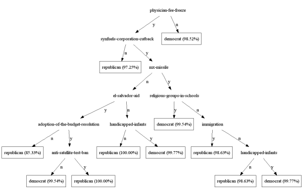

This is documentation for Orange 2.7. For the latest documentation, see Orange 3.
Classification¶
Much of Orange is devoted to machine learning methods for classification, or supervised data mining. These methods rely on the data with class-labeled instances, like that of senate voting. Here is a code that loads this data set, displays the first data instance and shows its predicted class (republican):
>>> data = Orange.data.Table("voting")
>>> data[0]
['n', 'y', 'n', 'y', 'y', 'y', 'n', 'n', 'n', 'y', '?', 'y', 'y', 'y', 'n', 'y', 'republican']
>>> data[0].get_class()
<orange.Value 'party'='republican'>
Learners and Classifiers¶
Classification uses two types of objects: learners and classifiers. Learners consider class-labeled data and return a classifier. Given a data instance (a vector of feature values), classifiers return a predicted class:
>>> import Orange
>>> data = Orange.data.Table("voting")
>>> learner = Orange.classification.bayes.NaiveLearner()
>>> classifier = learner(data)
>>> classifier(data[0])
<orange.Value 'party'='republican'>
Above, we read the data, constructed a naive Bayesian learner, gave it the data set to construct a classifier, and used it to predict the class of the first data item. We also use these concepts in the following code that predicts the classes of the first five instances in the data set:
classifier = Orange.classification.bayes.NaiveLearner(data)
for d in data[:5]:
c = classifier(d)
print "%10s; originally %s" % (classifier(d), d.getclass())
The script outputs:
republican; originally republican
republican; originally republican
republican; originally democrat
democrat; originally democrat
democrat; originally democrat
Naive Bayesian classifier has made a mistake in the third instance, but otherwise predicted correctly. No wonder, since this was also the data it trained from.
Probabilistic Classification¶
To find out what is the probability that the classifier assigns to, say, democrat class, we need to call the classifier with additional parameter that specifies the output type. If this is Orange.classification.Classifier.GetProbabilities, the classifier will output class probabilities:
classifier = Orange.classification.bayes.NaiveLearner(data)
target = 1
print "Probabilities for %s:" % data.domain.class_var.values[target]
for d in data[:5]:
ps = classifier(d, Orange.classification.Classifier.GetProbabilities)
print "%5.3f; originally %s" % (ps[target], d.getclass())
The output of the script also shows how badly the naive Bayesian classifier missed the class for the thrid data item:
Probabilities for democrat:
0.000; originally republican
0.000; originally republican
0.005; originally democrat
0.998; originally democrat
0.957; originally democrat
Cross-Validation¶
Validating the accuracy of classifiers on the training data, as we did above, serves demonstration purposes only. Any performance measure that assess accuracy should be estimated on the independent test set. Such is also a procedure called cross-validation, which averages performance estimates across several runs, each time considering a different training and test subsets as sampled from the original data set:
data = Orange.data.Table("voting")
bayes = Orange.classification.bayes.NaiveLearner()
res = Orange.evaluation.testing.cross_validation([bayes], data, folds=5)
print "Accuracy: %.2f" % Orange.evaluation.scoring.CA(res)[0]
print "AUC: %.2f" % Orange.evaluation.scoring.AUC(res)[0]
Cross-validation is expecting a list of learners. The performance estimators also return a list of scores, one for every learner. There was just one learner in the script above, hence the list of size one was used. The script estimates classification accuracy and area under ROC curve. The later score is very high, indicating a very good performance of naive Bayesian learner on senate voting data set:
Accuracy: 0.90
AUC: 0.97
Handful of Classifiers¶
Orange includes wide range of classification algorithms, including:
- logistic regression (Orange.classification.logreg)
- k-nearest neighbors (Orange.classification.knn)
- support vector machines (Orange.classification.svm)
- classification trees (Orange.classification.tree)
- classification rules (Orange.classification.rules)
Some of these are included in the code that estimates the probability of a target class on a testing data. This time, training and test data sets are disjoint:
import Orange
import random
data = Orange.data.Table("voting")
test = Orange.data.Table(random.sample(data, 5))
train = Orange.data.Table([d for d in data if d not in test])
tree = Orange.regression.tree.TreeLearner(train, same_majority_pruning=1, m_pruning=2)
tree.name = "tree"
knn = Orange.classification.knn.kNNLearner(train, k=21)
knn.name = "k-NN"
lr = Orange.classification.logreg.LogRegLearner(train)
lr.name = "lr"
classifiers = [tree, knn, lr]
target = 0
print "Probabilities for %s:" % data.domain.class_var.values[target]
print "original class ",
print " ".join("%-9s" % l.name for l in classifiers)
return_type = Orange.classification.Classifier.GetProbabilities
for d in test:
print "%-15s" % (d.getclass()),
print " ".join("%5.3f" % c(d, return_type)[target] for c in classifiers)
For these five data items, there are no major differences between predictions of observed classification algorithms:
Probabilities for republican:
original class tree k-NN lr
republican 0.949 1.000 1.000
republican 0.972 1.000 1.000
democrat 0.011 0.078 0.000
democrat 0.015 0.001 0.000
democrat 0.015 0.032 0.000
The following code cross-validates several learners. Notice the difference between this and the code above. Cross-validation requires learners, while in the script above, learners were immediately given the data and the calls returned classifiers.
import Orange
data = Orange.data.Table("voting")
tree = Orange.classification.tree.TreeLearner(sameMajorityPruning=1, mForPruning=2)
tree.name = "tree"
nbc = Orange.classification.bayes.NaiveLearner()
nbc.name = "nbc"
lr = Orange.classification.logreg.LogRegLearner()
lr.name = "lr"
learners = [nbc, tree, lr]
print " "*9 + " ".join("%-4s" % learner.name for learner in learners)
res = Orange.evaluation.testing.cross_validation(learners, data, folds=5)
print "Accuracy %s" % " ".join("%.2f" % s for s in Orange.evaluation.scoring.CA(res))
print "AUC %s" % " ".join("%.2f" % s for s in Orange.evaluation.scoring.AUC(res))
Logistic regression wins in area under ROC curve:
nbc tree lr
Accuracy 0.90 0.95 0.94
AUC 0.97 0.94 0.99
Reporting on Classification Models¶
Classification models are objects, exposing every component of its structure. For instance, one can traverse classification tree in code and observe the associated data instances, probabilities and conditions. It is often, however, sufficient, to provide textual output of the model. For logistic regression and trees, this is illustrated in the script below:
import Orange
data = Orange.data.Table("titanic")
lr = Orange.classification.logreg.LogRegLearner(data)
print Orange.classification.logreg.dump(lr)
tree = Orange.classification.tree.TreeLearner(data)
print tree.to_string()
The logistic regression part of the output is:
class attribute = survived
class values = <no, yes>
Feature beta st. error wald Z P OR=exp(beta)
Intercept -1.23 0.08 -15.15 -0.00
status=first 0.86 0.16 5.39 0.00 2.36
status=second -0.16 0.18 -0.91 0.36 0.85
status=third -0.92 0.15 -6.12 0.00 0.40
age=child 1.06 0.25 4.30 0.00 2.89
sex=female 2.42 0.14 17.04 0.00 11.25
Trees can also be rendered in dot:
tree.dot(file_name="0.dot", node_shape="ellipse", leaf_shape="box")
Following figure shows an example of such rendering.
